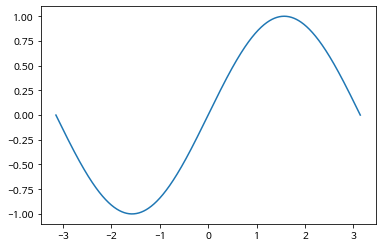
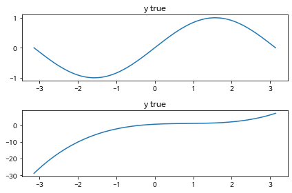

import math
import torch
import matplotlib.pyplot as plt파이토치 딥러닝 01
사인 함수 예측
딥러닝 절차
모델 정의 -> [모델 순전파(입력층->노드->출력층) -> 오차 계산 -> 오차역전파(가중치 업데이트)] -> []반복(손실 최소화) -> 학습 종료 -> 모델 사용
사인 함수 예측 절차
- 랜덤하게 가중치 적용하여 사인곡선 그리기
x = torch.linspace(-math.pi, math.pi, 1000)
x[:10]tensor([-3.1416, -3.1353, -3.1290, -3.1227, -3.1164, -3.1101, -3.1039, -3.0976,
-3.0913, -3.0850])# 실제 사인곡선에서 추출한 값으로 y 만들기
y = torch.sin(x)
y[:10]tensor([ 8.7423e-08, -6.2894e-03, -1.2579e-02, -1.8867e-02, -2.5155e-02,
-3.1442e-02, -3.7728e-02, -4.4012e-02, -5.0295e-02, -5.6575e-02])plt.rcParams['axes.unicode_minus'] = False
plt.plot(x, y)
plt.show()
# 임의의 가중치(계수) 뽑아서 예측 사인 곡선 y 만들기
a, b, c, d = [torch.randn(()) for i in range(4)]
# a = torch.randn(())
# b = torch.randn(())
# c = torch.randn(())
# d = torch.randn(())
a, b, c, d(tensor(0.4600), tensor(-1.1571), tensor(1.1807), tensor(0.5696))y_random = a * x**3 + b * x**2 + c * x + d
# 정답
plt.subplot(2, 1, 1)
plt.title('y true')
plt.plot(x, y)
# 예측
plt.subplot(2, 1, 2)
plt.title('y true')
plt.plot(x, y_random)
plt.tight_layout()
plt.show()
learning_rate = 1e-6
for epoch in range(2000):
y_pred = a * x**3 + b * x**2 + c * x + d
loss = (y_pred - y).pow(2).sum().item() # 손실함수 정의
if epoch % 100 == 0:
print(f'epoch({epoch+1}) loss:{loss}')
grad_y_pred = 2.0 * (y_pred - y) # 기울기 미분값
grad_a = (grad_y_pred * x ** 3).sum()
grad_b = (grad_y_pred * x ** 2).sum()
grad_c = (grad_y_pred * x).sum()
grad_d = grad_y_pred.sum()
a -= learning_rate * grad_a # 가중치 업데이트
b -= learning_rate * grad_b
c -= learning_rate * grad_c
d -= learning_rate * grad_depoch(1) loss:71824.8984375
epoch(101) loss:243.87081909179688
epoch(201) loss:200.19113159179688
epoch(301) loss:168.5479736328125
epoch(401) loss:142.0349884033203
epoch(501) loss:119.81693267822266
epoch(601) loss:101.19578552246094
epoch(701) loss:85.58743286132812
epoch(801) loss:72.50303649902344
epoch(901) loss:61.533260345458984
epoch(1001) loss:52.33539962768555
epoch(1101) loss:44.62245178222656
epoch(1201) loss:38.154075622558594
epoch(1301) loss:32.728878021240234
epoch(1401) loss:28.178260803222656
epoch(1501) loss:24.360836029052734
epoch(1601) loss:21.158227920532227
epoch(1701) loss:18.471174240112305
epoch(1801) loss:16.216476440429688
epoch(1901) loss:14.324440002441406보스톤 집값 예측
from sklearn.datasets import load_boston
dataset = load_boston()
print(dataset.DESCR).. _boston_dataset:
Boston house prices dataset
---------------------------
**Data Set Characteristics:**
:Number of Instances: 506
:Number of Attributes: 13 numeric/categorical predictive. Median Value (attribute 14) is usually the target.
:Attribute Information (in order):
- CRIM per capita crime rate by town
- ZN proportion of residential land zoned for lots over 25,000 sq.ft.
- INDUS proportion of non-retail business acres per town
- CHAS Charles River dummy variable (= 1 if tract bounds river; 0 otherwise)
- NOX nitric oxides concentration (parts per 10 million)
- RM average number of rooms per dwelling
- AGE proportion of owner-occupied units built prior to 1940
- DIS weighted distances to five Boston employment centres
- RAD index of accessibility to radial highways
- TAX full-value property-tax rate per $10,000
- PTRATIO pupil-teacher ratio by town
- B 1000(Bk - 0.63)^2 where Bk is the proportion of black people by town
- LSTAT % lower status of the population
- MEDV Median value of owner-occupied homes in $1000's
:Missing Attribute Values: None
:Creator: Harrison, D. and Rubinfeld, D.L.
This is a copy of UCI ML housing dataset.
https://archive.ics.uci.edu/ml/machine-learning-databases/housing/
This dataset was taken from the StatLib library which is maintained at Carnegie Mellon University.
The Boston house-price data of Harrison, D. and Rubinfeld, D.L. 'Hedonic
prices and the demand for clean air', J. Environ. Economics & Management,
vol.5, 81-102, 1978. Used in Belsley, Kuh & Welsch, 'Regression diagnostics
...', Wiley, 1980. N.B. Various transformations are used in the table on
pages 244-261 of the latter.
The Boston house-price data has been used in many machine learning papers that address regression
problems.
.. topic:: References
- Belsley, Kuh & Welsch, 'Regression diagnostics: Identifying Influential Data and Sources of Collinearity', Wiley, 1980. 244-261.
- Quinlan,R. (1993). Combining Instance-Based and Model-Based Learning. In Proceedings on the Tenth International Conference of Machine Learning, 236-243, University of Massachusetts, Amherst. Morgan Kaufmann.
import pandas as pd
df = pd.DataFrame(dataset.data, columns=dataset.feature_names)
df['target'] = dataset.target
df.head()| CRIM | ZN | INDUS | CHAS | NOX | RM | AGE | DIS | RAD | TAX | PTRATIO | B | LSTAT | target | |
|---|---|---|---|---|---|---|---|---|---|---|---|---|---|---|
| 0 | 0.00632 | 18.0 | 2.31 | 0.0 | 0.538 | 6.575 | 65.2 | 4.0900 | 1.0 | 296.0 | 15.3 | 396.90 | 4.98 | 24.0 |
| 1 | 0.02731 | 0.0 | 7.07 | 0.0 | 0.469 | 6.421 | 78.9 | 4.9671 | 2.0 | 242.0 | 17.8 | 396.90 | 9.14 | 21.6 |
| 2 | 0.02729 | 0.0 | 7.07 | 0.0 | 0.469 | 7.185 | 61.1 | 4.9671 | 2.0 | 242.0 | 17.8 | 392.83 | 4.03 | 34.7 |
| 3 | 0.03237 | 0.0 | 2.18 | 0.0 | 0.458 | 6.998 | 45.8 | 6.0622 | 3.0 | 222.0 | 18.7 | 394.63 | 2.94 | 33.4 |
| 4 | 0.06905 | 0.0 | 2.18 | 0.0 | 0.458 | 7.147 | 54.2 | 6.0622 | 3.0 | 222.0 | 18.7 | 396.90 | 5.33 | 36.2 |
import torch
import torch.nn as nn
from torch.optim.adam import Adammodel = nn.Sequential(
nn.Linear(13, 100), # df.shape => (516, 13) target 제외
nn.ReLU(),
nn.Linear(100, 1)
)
modelSequential(
(0): Linear(in_features=13, out_features=100, bias=True)
(1): ReLU()
(2): Linear(in_features=100, out_features=1, bias=True)
)X = df.iloc[:, :-1].values
y = df.iloc[:, -1].values
X.shape, y.shape((506, 13), (506,))batch_size = 100
learning_rate = 0.001
optim = Adam(model.parameters(), lr=learning_rate)
for epoch in range(200):
for i in range(len(X) // batch_size):
start = i * batch_size
end = start + batch_size
# 파이토치 실수형 텐서로 변환
x = torch.FloatTensor(X[start:end])
y = torch.FloatTensor(y[start:end])